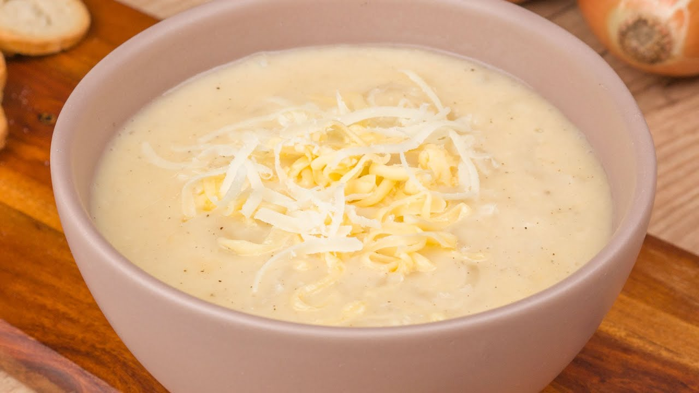

Home
Sopa de Lua

Descrição
Uma sopa refrescante e mágica, feita com caldo de lua e cogumelos lunares, que transporta você para uma noite sob o luar. Ideal para dias frios ou como um prato principal em uma refeição especial.
Ingredientes
- 1 litro de caldo de lua (caldo especial com sabor a limão)
- 200g de cogumelos lunares
- 100g de cebola picada
- 50g de queijo ralado
Modo de Preparo
- Cozinhe os cogumelos e a cebola no caldo
- Tempere com sal e pimenta
- Adicione o queijo ralado
- Sirva quente